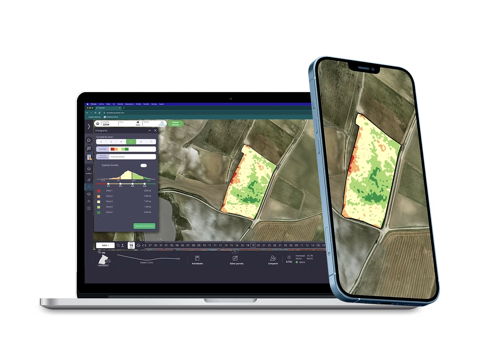
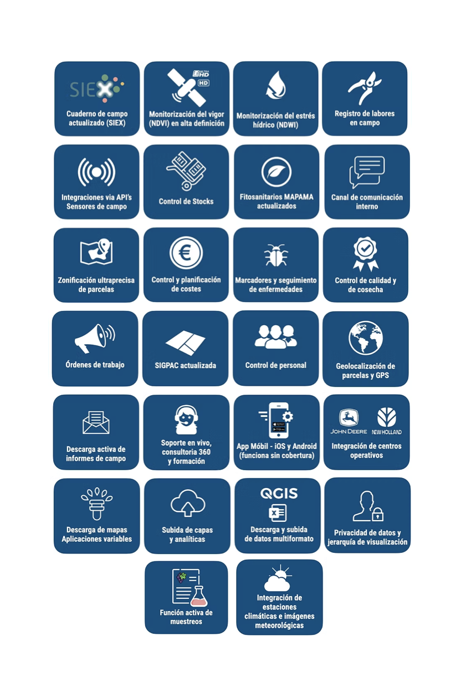

INTELIGENCIA ARTIFICIAL PARA LA AGRICULTURA
OFRECEMOS SOLUCIONES INTELIGENTES
PARA MONITORIZAR Y OPTIMIZAR EL
MANEJO DE ACTIVOS AGRÍCOLAS
Software para la gestión de explotaciones - TODO EN UNO
Queremos ser tu aliado tecnológico en la transformación digital del sector agrario. Ofrecemos una plataforma de monitorización y control en tiempo real del estado de los cultivos, basada en datos climáticos y análisis satelital.
Una solución diseñada para analizar, gestionar y optimizar explotaciones agrícolas, integrando el Cuaderno de Explotación Digital (CUE) en un único entorno.

Especializados en Cultivos Leñosos
SOLUCIONES INTELIGENTES
Ofrecemos soluciones tecnológicas avanzadas y personalizadas para ayudar a las zonas vitícolas a poner en valor su singularidad, optimizar la gestión de sus explotaciones y afrontar los desafíos globales del sector.
TODO EN UNO
Ponemos a tu alcance las herramientas más innovadoras del mercado para un manejo integral, sostenible e inteligente de las explotaciones agrícolas.

REFERENTES TECNOLÓGICOS EN LA VITICULTURA ESPAÑOLA
+ 80.000 HECTÁREAS DIGITALIZADAS
+ 100.000 PARCELAS MONITORIZADAS
MIEMBROS DE DIGITAL CATALONIA ALLIANCE
Arcadia forma parte de la Digital Catalonia Alliance (DCA).
Somos pioneros en el sector Agrotech.
Nuestra plataforma integra datos climáticos, análisis satelital y monitorización en tiempo real.

OBSESIÓN POR EL I+D
Impulsamos la transformación digital de la viticultura mediante IA y análisis satelital.
Contacto
Ponte en contacto con nosotros
© ARCADIA GLOBAL ANALYTICS. All rights reserved.